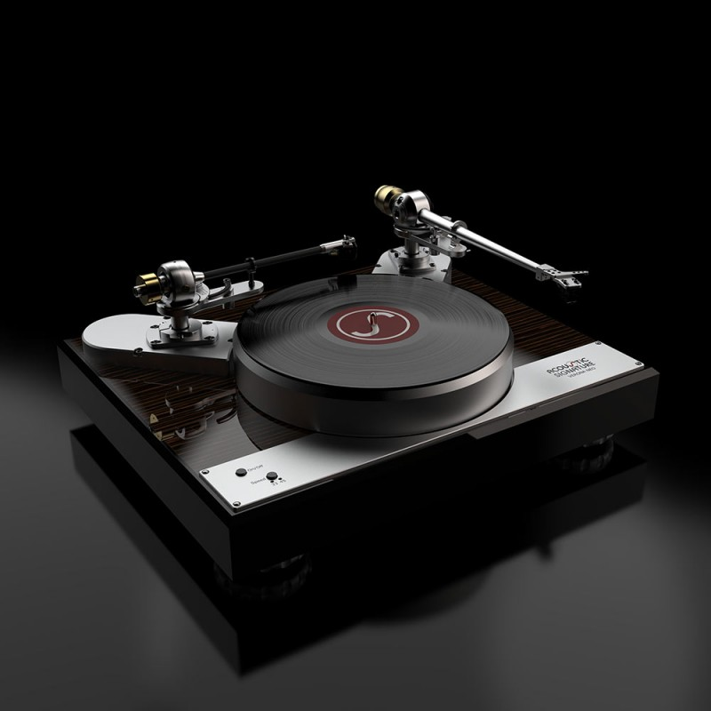

Vă mulțumim că ne vizitați site-ul dedicat pasionaților de muzică.
Rock
Pop
Jazz
Electronică
Clasică
Puteți alege să ascultați vinyl-ul preferat în incinta
magazinului nostru, iar dacă sunteți mulțumit de calitatea sunetului, îl puteți
achiziționa direct de la locație sau online, prin intermediul site-ului.

Echipamentul nostru de audiție din magazin.
Promoții și oferte
Super ofertă de weekend
Vinyllium oferă reduceri de 20% 25% pentru toate
produsele cumpărate în intervalul 8-10.
Oferta este valabilă doar în zilele de sâmbătă și duminică la sediile CD.
În cazul în care cumpărați mai mult de trei discuri primiși unul cadou din partea noastră!
Ofertă pachet
Magazinul Vinyllium oferă pachetul Rockstadt Pack, cuprinzând:
Un set de 4 vinyl-uri din subgenuri rock diferite
O cutie gravată cu sigla festivalului pentru depozitarea a 10 vinyl-uri
Gratis: o fibră de satin pentru îngrijirea pick-up-ului
Gratis: un ac de schimb pentru pick-up
Vinyl-uri tematice
Noi punem suflet atunci când ascultăm muzică...
În preajma sărbătorilor de orice fel, disc-urile tematice au reduceri speciale:
Orice vinyl Mariah Carey la jumătate de preț de Crăciun!
De Halloween reducere la discografia trupei... Helloween!
De ziua îndragostiților, orice al doilea vinyl Jazz cumpărat vine la jumătate de preț!
Produsele noastre
Status stoc ediții limitate (Alternosfera):
5 bucăți (Stoc critic)
Satisfacția clienților audiofili:
95% (Excelent)
Vă oferim o multitudine de variante care fac ascultatul de muzică cu adevărat o experiență:
Vinyl-uri 33 RPM
Din această gamă, pe subgenuri:
pop
folk
populară
Vinyl-uri 45 RPM
Subgenuri ale acestui tip:
rock
electronică
clasică
pop
jazz
rap
Aparate pick-up
Aparatele noastre pick-up provin de la cele mai renumite firme din industrie:
Audio-Tehnica
Sony
Pioneer
Pro-Ject
Rega
Orar
Programul de funcționare a magazinului fizic Vinyllium
Cod
Perioadă
Zi
Interval dimineata
Pauza
Interval seară
Zile Lucrătoare
Luni
8-14
14-16
16-22
Marti
8-14
14-16
16-22
Miercuri
8-14
14-16
16-22
Joi
10-14
14-16
16-20
Vineri
10-14
14-16
16-20
Weekend
Sambata
10-12
-
închis
Duminica
închis
-
închis
Închis cu ocazia sărbătorilor legale.
Atentie!!! in prima zi a lunii facem inventar.
Evenimente și Anunțuri
-
Record Store Day: Sărbătorim ziua magazinelor independente de muzică! Aducem ediții
limitate și discuri rare de vinil direct pe rafturile Vinyllium.
-
Workshop: Vino să înveți cum să reglezi corect brațul pentru a nu-ți zgâria discurile.
-
Restocare masivă Classic Rock: Am readus pe stoc cele mai căutate albume Pink Floyd,
Queen și Led Zeppelin. Primul venit, primul servit!
-
Audiție Jazz pe Vinil: Dăm play la capodoperele lui Miles Davis și John Coltrane pe un
sistem de top.
Întrebări frecvente
Cumpărați sau vindeți discuri second-hand?
Da! Evaluăm cu mare atenție starea fiecărui disc folosind sistemul internațional de notare și le
curățăm profesional înainte de a le pune pe raft.
Discul nou cumpărat „sare. E defect?
De cele mai multe ori, nu. Dacă problema persistă pe mai multe discuri, te așteptăm cu el în
magazin pentru un test gratuit pe aparatele noastre!
Cum ar trebui să îmi depozitez corect colecția de vinyl-uri?
Întotdeauna vertical, ca pe niște cărți în bibliotecă! Nu le stivui niciodată
unele peste altele pe orizontală (se vor deforma din cauza greutății) și ține-le departe de
lumina directă a soarelui sau de calorifere.
Ascultatul la pick-up dă dependență și mă va face să judec prietenii care ascultă muzică la
boxa telefonului?
Ne rezervăm dreptul de a nu răspunde oficial la această întrebare; dar... da, cel mai probabil!
Galerie
BrioseBrioseBrioseBrioseBrioseBrioseBriose
Configurare echipamente
Dacă doriți să vă configurați singuri echipamentele audio de la casele dumneavoastră vă recomandăm
videoclipurile de mai jos. Dacă întâmpinați orice fel de problemă nu ezitați să ne contactați!